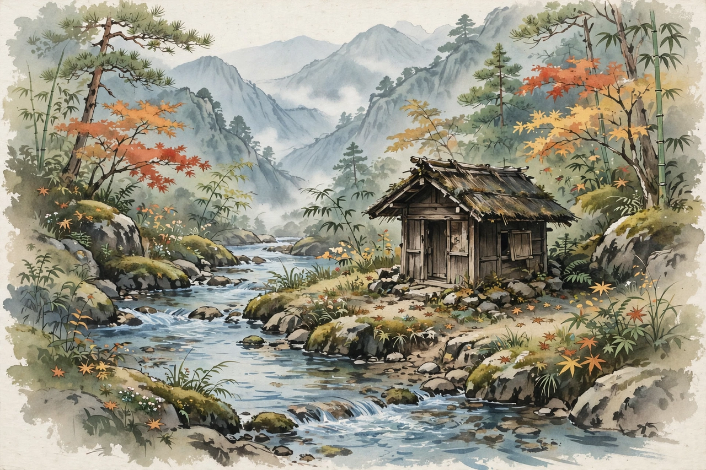

Kamo no Chōmei (Japanese: 鴨 長明; 1153 or 1155 – 1216) was a Japanese author, poet (waka), and essayist of the late Heian and early Kamakura periods. He is best known for Hōjōki ("An Account of My Hut", 1212), a classic of Japanese literature describing the disasters that struck the capital in his lifetime and his withdrawal to a tiny hermit's hut, and for the poetry treatise Mumyōshō. Along with Yoshida Kenkō, he is a master of the Japanese essay tradition (zuihitsu).
| Kamo no Chōmei | |
|---|---|
 The hermit's hut of the Hōjōki | |
| Born | 1153 or 1155, Kyoto, Japan |
| Died | 1216 (aged about 61–63) |
| Occupation | Poet, essayist, musician; later Buddhist monk |
| Notable works | Hōjōki (1212); Mumyōshō; Hosshinshū |
| Movement | Recluse literature; zuihitsu |
Chōmei was born into the hereditary priestly family of the Kamo Shrines in Kyoto, one of the most important Shinto shrines. He distinguished himself early as a poet and biwa and koto musician and received imperial recognition, but a succession dispute over his father's office — his appointment was blocked by a rival branch of the family — dashed his prospects at the shrine. Around the age of fifty he took Buddhist vows and withdrew from society, eventually settling in a small hut on Mount Hino southeast of the capital, where he wrote his masterworks. He was included in the imperial anthology Shin Kokin Wakashū and participated in the poetic world around the retired Emperor Go-Toba, yet chose the hermit's life as his definitive stance.
Hōjōki (1212), whose title means "Account of a Ten-Foot-Square Hut", opens with one of the most famous passages in Japanese prose:
"The flow of the river is ceaseless and its water is never the same. The bubbles that float in the pools, now vanishing, now forming, are not of long duration: so in the world are man and his dwellings."
The first half catalogues the calamities of the age: the great fire of 1177, a whirlwind, the disastrous relocation of the capital to Fukuhara, famine, and the earthquake of 1185 — evidence of impermanence and the dawning age of mappō. The second half describes his progressively smaller dwellings, ending with the portable ten-foot hut where, free of attachment, he finds an ironic contentment — closing with self-questioning about whether his love of solitude is itself an attachment.
His Mumyōshō ("Nameless Notes") preserves anecdotes and judgments about poets and poetic practice; the Hosshinshū is a collection of Buddhist tales (setsuwa) about renunciation. Chōmei's fusion of poetic sensibility, Buddhist insight, and plain description founded the recluse-essay tradition continued by Kenkō and, centuries later, admired by writers such as Matsuo Bashō.
From Wikipedia, the free encyclopedia (recreated from memory).